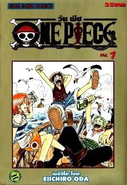
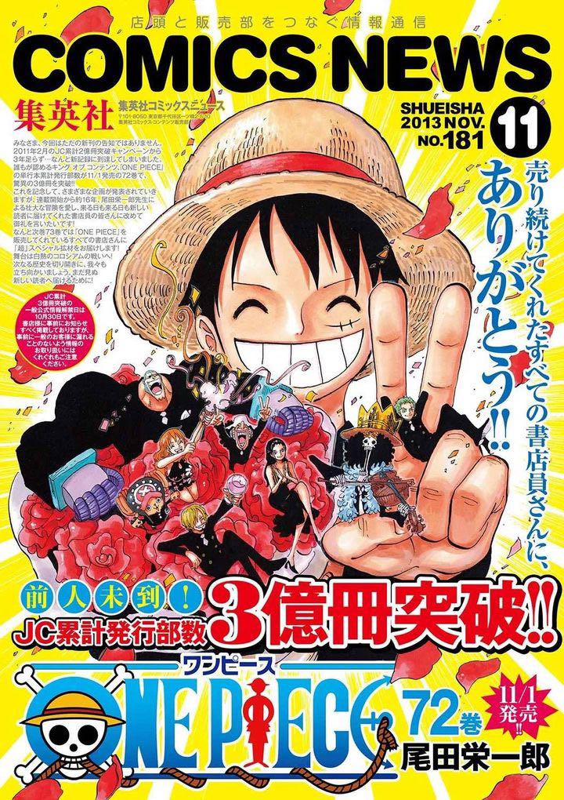
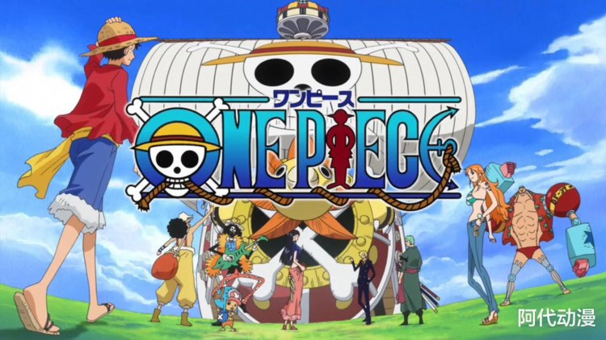
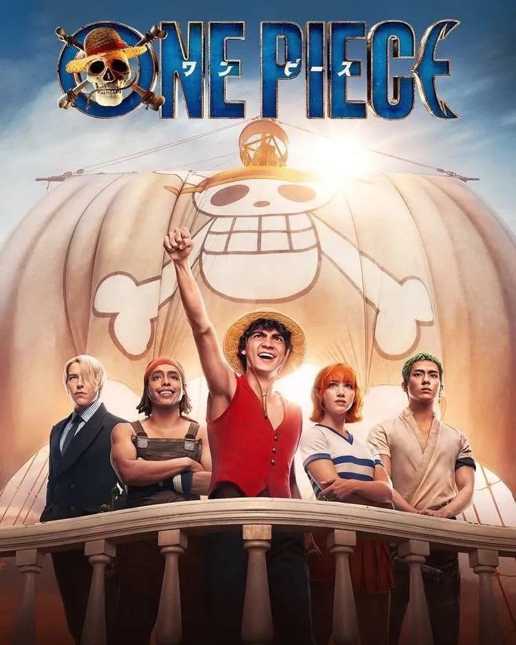

ความเป็นมา

วันพีซ เป็น การ์ตูนญี่ปุ่นเขียนโดย เออิจิโระ โอดะ
เรื่องราวของการตามหา "วันพีซ"
โดยผู้ที่ได้มาครอบครองจะได้เป็นจ้าวแห่งโจรสลัด
เริ่มลงตีพิมพ์ในนิตยสาร โชเน็นจัมป์ ของสำนักพิมพ์ ชูเอฉะ ตั้งแต่ปี พ.ศ. 2540
และเนื่องจากความโด่งดัง วันพีซ จึงได้รับการดัดแปลงเป็น อนิเมะ นวนิยาย รวมไปถึง เกม อีกหลายภาคด้วยกัน
วันพีซเป็นการ์ตูนที่ได้รับการตีพิมพ์ที่สุดในโลก
โดยตีพิมพ์ไปมากกว่า 320 ล้านเล่มทั่วโลกระหว่างปี พ.ศ. 2540 ถึง 2557
จุดเด่นของเรื่องนี้อยู่ที่การที่ผู้วาดได้สร้างสรรค์ความฝันซึ่งต้องการลอยพร้อมกับเหล่ามิตรแท้ในวัยเด็กของหลาย ๆ คนได้อย่างมีเสน่ห์
โดยระหว่างลอยนั้น ลูฟี่และผองเพื่อนต้องเจออุปสรรคในการพิสูจน์เพื่อนแท้มากมาย รวมทั้งได้เรียนรู้เรื่องราวและตำนานของบุคคลต่าง ๆ ที่ผ่านเข้ามาในเนื้อเรื่อง
วันพีซคืออะไร
 
วันพีซ เป็นเรื่องราวในยุคทองของโจรสลัด
โจรสลัดทุกคนมีเป้าหมายเดียวกันคือเพื่อค้นหา สมบัติในตำนานที่เรียกว่า "วันพีซ"
โดยผู้ที่เคยครอบครองวันพีซนั้นมีอยู่คนเดียวตามที่เปิดเผยคือ ราชาแห่งโจรสลัด โกลด์ ดี โรเจอร์
ซึ่งหลังจากที่ ได้ครอบครองวันพีซแล้ว โกลด์ ดี โรเจอร์ ได้เป็นราชาโจรสลัด
ชายผู้ได้ทั้ง ความมั่งคั่ง ชื่อเสียงและอำนาจ ผู้ที่ได้ทุกอย่างในโลกมาครอบครองนั้น ได้สั่งสลายกลุ่ม
จากนั้นแยกย้ายกันไปไม่มีใครรู้อีก 1 ปีต่อมา ก็ได้มอบตัวและยอมรับโทษการประหารชีวิตที่เกาะโพลสตาร์
ที่เมืองโล้คทาวน์บ้านเกิดของตน และก่อนตายได้มีคนถามโรเจอร์เรื่องสมบัติของโรเจอร์
โรเจอร์ได้ทิ้งคำพูดสุดท้ายที่เปลี่ยนยุคสมัยของโจรสลัดว่า "สมบัติของฉันน่ะเหรอ อยากได้ก็เอาไปสิ
ไปหาเอาเลย ฉันเอาทุกอย่างบนโลกไปไว้ที่นั่นหมดแล้ว" จากนั้นก็ถูกประหารทันที
แล้วเหล่าคนดูในลานประหารก็โห่ร้องกันอย่างดีใจ กับคนที่ทราบข่าวก็ออกเดินเรือไปเป็นโจรสลัดกัน
โจรสลัดทั้งหลายจึงมุ่งหน้าสู่ แกรนด์ไลน์ เพื่อตามหาวันพีซ จนโลกได้เข้าสู่ยุคสมัยของโจรสลัด 22 ปีกว่าต่อมา
ด็กหนุ่มที่ใส่หมวกฟางมีพลังพิเศษจากผลปีศาจ จึงเป็นผู้มีพลังพิเศษ ในวันเกิดอายุ 17 ปี
ได้ออกเดินเรือไปเป็นโจรสลัด กับออกรวบรวมพรรคพวกจากการผจญภัย
ปัจจุบันมีการทำแบบ live action

เป็นอนิเมะเเละมังงะอันดับ1ที่ดังมากไปทั่วโลก
เลยมาทำเป็น live action ฉบับคนเเสดง เเละสร้างรายได้มหาศาล